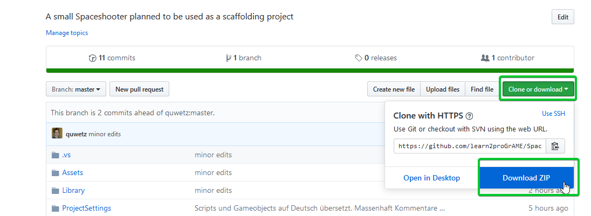
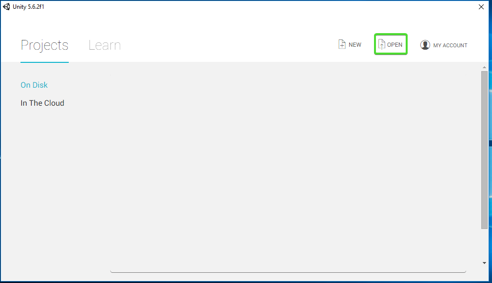
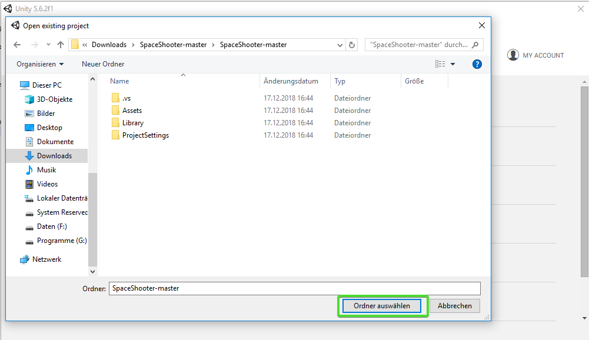
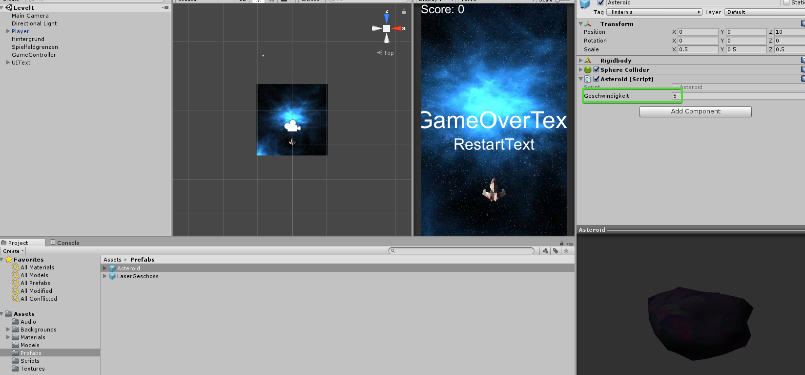
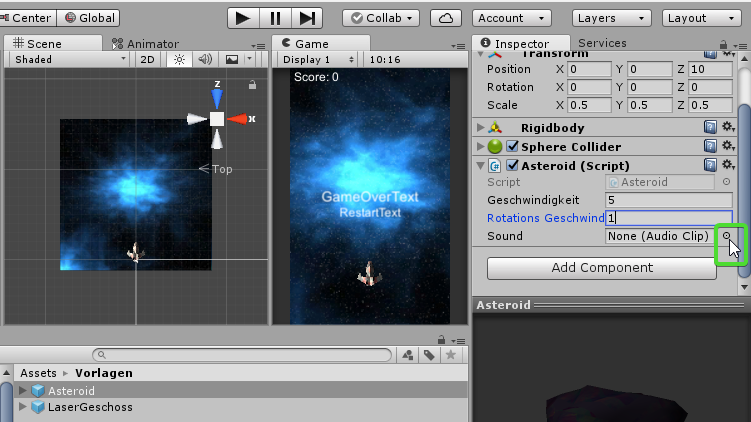

Space-Asteroids¶
Lernziele
In diesem Kapitel wirst du mithilfe des Gelernten aus den vorigen Kapiteln die letzten Teile des Spiels Space-Asteroids selber programmieren.
In Space-Asteroids fliegst du mit einem Raumschiff durch ein Asteroidenfeld. Du musst die Asteroiden abschießen oder ihnen ausweichen. Wenn du von einem getroffen wirst, explodiert das Raumschiff.
Arbeitsauftrag
Vervollständige das Unity-Projekt. Lediglich die Programmierung der Asteroiden fehlt noch.
Projekt downloaden¶
-
Klicke zuerst auf "Clone or Download" und dann auf "Download ZIP"

-
Nach dem Download entzippe das heruntergeladene Verzeichnis, öffne Unity und klicke auf "Open"

-
Gehe in das entpackte Verzeichnis und öffne das Projekt.

Teste das Spiel¶
Klicke auf den Play-Button in Unity und teste das Spiel
Du kannst mit den Pfeiltasten herumfliegen und mit der Leertaste schießen.
Ansonsten ist das Spiel aber noch recht langweilig.
Wenn du während das Spiel läuft in die Scene-View schaust, siehst du, dass am oberen Spielfeldrand schon Asteroiden erzeugt werden. Allerdings tun diese noch nichts.
Bewegung der Asteroiden¶
Die benötigten Variablen deklarieren¶
Als erstes kümmern wir uns darum, dass die Asteroiden in Bewegung gesetzt werden. Sie sollen senkrecht vom oberen Rand des Spielfelds zum unteren Rand fliegen.
Öffne unter Assets/Scripts das Script Asteroid
Da wir die eingebaute Physic-Engine von Unity verwenden, benötigen wir für die Bewegung einen Rigidbody.
Erstelle als erstes eine private Variable vom Typ Rigidbody in der dieser gespeichert wird.
Lege außerdem noch eine public Variable für die Geschwindigkeit an mit der der Asteroid fliegen soll.
Bewegung im Spiel¶
Bevor du den Asteroiden in Bewegung setzen kannst, musst du die Variable des Rigidbodys initialisieren.
Mache dies in der start() Methode mit dem Befehl GetComponent<Rigidbody>()
Dein Code sollte so aussehen:
//Start() wird von Unity aufgerufen, wenn das Object erzeugt wird.
void Start(){
//Setze die Referenz auf den Rigidbody
rb = GetComponent<Rigidbody> ();
}
Nun müssen wir dem Rigidbody nur noch eine Geschwindigkeit geben.
Verwende hierfür den Befehl rb.velocity = new Vector3 (0, 0, -geschwindigkeit);
Füge diesen Befehl ebenfalls in der Start() Methode nach dem Initialisieren von rb ein.
Hinweis
Vielleicht ist dir aufgefallen, dass wir die Variable geschwindigkeit noch gar nicht initialisiert haben. Das ist kein Problem. Da diese public ist, kann man ihren Wert im Inspector von Unity festlegen.
Speichere das Script und gehe wieder in Unity.
Im Ordner Assets/Vorlagen findest du die Vorlage für die Asteroiden. Wenn du sie auswählst siehst du, dass das Script Asteroid.cs bereits angehängt ist. Wenn du nun noch die geschwindigkeit auf einen Wert größer als 0 setzt, bist du mit diesem Teil fertig.

Vergiss nicht zu testen und probiere ein paar unterschiedliche Werte für die Geschwindigkeit aus!
Rotation der Asteroiden¶
Die Asteroiden bewegen sich nun zwar, allerdings sehen sie noch ein bisschen leblos aus. Lassen wir sie rotieren!
Sie sollen mit einer bestimmten Geschwindigkeit um eine zufällige Achse rotieren.
Erstelle eine public Variable vom Typ float für die Rotationsgeschwindigkeit und gib ihr einen sinnvollen Namen.
Dann füge am Ende der Methode start() folgenden Befehl ein:
Wobei rotationsGeschwindigkeit der von dir gewählte Variablenname sein muss.
Speichere das Skript, gehe in Unity und setze die Rotationsgeschwindigkeit im Inspector so wie in Schritt 3.2.
Teste!
Kollision¶
Die Asteroiden fliegen herum, drehen sich und wenn sie das Raumschiff berühren wird dieses zerstört. Allerdings kann man sie noch nicht abschießen.
In diesem Teil wirst du folgende Dinge programmieren:
Wenn ein Asteroid mit einem Lasergeschoß kollidiert ...
- ... werden Lasergeschoß und der Asteroid gelöscht
- ... wird der Punktestand erhöht
- ... wird ein Sound abgespielt
Hinweis
Der meiste Code in diesem Teil wird in der Methode OnTriggerEnter(Collider other) eingefügt. Diese Methode wird (etwas vereinfacht gesagt) von Unity immer dann aufgerufen, wenn eine Kollision stattfindet.
Der Parameter other ist hierbei der Collider des GameObjects mit dem kollidiert wird.
Was kollidiert?¶
Bevor wir implementieren, was geschehen soll, müssen wir überprüfen womit der Asteroid überhaupt kollidiert.
Füge ein if-Statement in der Methode OnTriggerEnter() ein, das überprüft ob die Variable other.tag gleich "Geschoß" ist. Um zu überprüfen ob other ein Lasergeschoß ist.
Hinweis
Man kann in Unity jedem Gameobject und jeder Vorlage einen tag zuweisen. Dieser tag ist als String Variable tag in jedem GameObject verfügbar. In diesem Spiel wurde z.B. den Lasergeschoßen der tag "Geschoß" und den Asteroiden der tag "Hindernis" gegeben.
Geschoß und Asteroid löschen¶
Um in Unity ein Gameobject zu löschen verwendet man die Funktion Destroy(GameObject). Diese löscht das Gameobjekt, das als Parameter angegeben wird am Ende des aktuellen Spielframes.
Rufe nun zweimal die Funktion Destroy() auf. Gib einmal other.gameObject und einmal gameObject als Parameter an.
Punktestand erhöhen¶
Der GameController stellt die Methode ErhoehePunktestand(int punkte) zur Verfügung.
Bevor du diese Funktion aufrufen kannst, benötigst du allerdings eine Variable mit einer Referenz auf den GameController.
- Erstelle eine private Variable vom Typ GameController am Beginn der Klasse und nenne sie "gameController".
- Initialisiere in der Methode
Start()die Variable für den GameController mithilfe der FunktionFindeGameController()
Rufe nun in der Methode OnTriggerEnter() im Asteroid-Skript die Funktion ErhoehePunktestand(int punkte) des GameControllers auf und gib als Parameter z.B. 10 an.
Hinweis
Um eine Funktion in einem anderen Objekt aufzurufen, verwende: variablenname-des-objekts.FunktionsName()
Also z.B. gameController.ErhoehePunktestand(10);
Sound abspielen¶
Lege als erstes eine public Variable vom Typ AudioClip am Beginn der Klasse an und speichere das Skript.
Gehe in Unity auf Assets/Vorlagen und wähle Asteroid aus. Im Inspektor siehst du die Variable für den AudioClip.
Klicke auf die Zielscheibe rechts daneben und wähle "Explosion1" aus.

Zum Abspielen des Sounds gibt es im GameController die Methode csharp SpieleSound(AudioClip sound, float lautstaerke)
Rufe diese Methode innerhalb von OnTriggerEnter auf und gib als Parameter die Variable für den Sound und 0.2f an.
Vollständiger SourceCode¶
Dein fertiger Sourcecode sollte in etwa so aussehen:
using System.Collections;
using System.Collections.Generic;
using UnityEngine;
public class Asteroid : MonoBehaviour {
//Referenz auf den Rigidbody
private Rigidbody rb;
//Die Geschwindigkeit mit der die Asteroiden fliegen
public float geschwindigkeit;
//Rotationsgeschwindigkeit
public float rotationsGeschwindigkeit;
//Referenz auf den GameController
private GameController gameController;
//Der Sound der bei der Zerstörung eines Asteroiden abgespielt wird.
public AudioClip explosionsSound;
//Start() wird von Unity aufgerufen, wenn das Object erzeugt wird.
void Start(){
//Setze die Referenz auf den Rigidbody
rb = GetComponent<Rigidbody> ();
//Setze die Geschwindigkeit
rb.velocity = new Vector3 (0, 0, -geschwindigkeit);
//Setze die Rotationsgeschwindigkeit
rb.angularVelocity = Random.insideUnitSphere * rotationsGeschwindigkeit;
//Setze GameController-Referenz
gameController = FindeGameController();
}
//OnTriggerEnter() wird von Unity aufgerufen, wenn ein anderer Collider mit dem eigenen Collider kollidiert.
void OnTriggerEnter(Collider other)
{
//Überprüfe ob das andere Objekt ein Geschoß ist.
if (other.tag == "Geschoß")
{
//Lösche das Geschoß
Destroy(other.gameObject);
//Lösche den Asteroiden selbst
Destroy(gameObject);
//erhöhe den Punktestand
gameController.ErhoehePunktestand(10);
//Spiele den explosionsSound ab
gameController.SpieleSound(explosionsSound, 0.2f);
}
}
// Diese Methode sucht nach dem GameController
// Wenn einer gefunden wird, wird eine Referenz darauf zurückgegeben.
// Wenn kein GameController vorhanden ist, wird das Spiel mit einer Fehlermeldung beendet.
private GameController FindeGameController() {
GameObject gameControllerObject = GameObject.FindWithTag("GameController");
//Befindet sich kein GameController im Spiel ist gameControllerObject == null
if (gameControllerObject != null)
{
return gameControllerObject.GetComponent<GameController>();
}
else
{
Debug.LogError("Cannot find GameController Script");
Application.Quit();
return null;
}
}
}